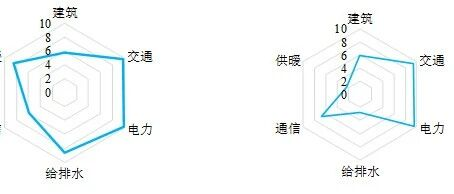

新论文：社区地震安全韧性评估系统及清华园应用示范


论文链接：
https://doi.org/10.6052/j.issn.1000-4750.2019.11.0670
0
太长不看版
目前虽然对地震韧性问题已有诸多研究，但是尚缺少可以实操的区域地震韧性评价方法和工具。在北京市地震局的支持下，清华大学团队提出了可操作的社区韧性定量评价方法，并以清华园社区为研究对象，开展了地震安全韧性评估工作，并开发了相应的系统平台。研究内容主要包括：1) 社区韧性评估体系；2) 建筑系统韧性评估；3) 交通系统韧性评估；4) 生命线系统韧性评估；5) 非实体系统韧性评估，并在此基础上开发了韧性评估系统应用示范软件平台。本研究定量评估了包含多个子系统的清华园社区地震安全韧性水平，成果可以作为示范为未来北京市范围内的推广应用提供参考。
1
研究背景
在地震灾害情境下，Bruneau等将韧性定义为社会单元能够减轻灾害，吸收灾害发生时的影响及采取措施及时恢复，以减小社会扰动和减轻未来地震影响的能力。国内外学者对韧性评价的框架都进行了有益的探索。如：国外SPUR的旧金山韧性目标、俄勒冈州韧性计划、NIST的社区韧性规划指南(CRPG)，国内清华大学方东平等提出的“三度空间下系统的系统”理论等。
北京地震风险突出，人口超过千万、地震设防烈度高达8度，是国际上为数不多发生过7级以上强震的特大城市。因此，充分评估地震安全韧性，保障抗震救灾能力是北京市防灾减灾工作的重点。
目前虽然对地震韧性问题已有诸多研究，但是尚缺少可以实操的区域地震韧性评价方法和工具。因此，清华大学团队在北京市地震局的支持下，以清华园社区为对象，开展了包含多个子系统的清华园社区地震安全韧性评估，成果可以作为示范为未来北京市范围内的推广应用提供参考。
2
理论方法
2.1 社区韧性评估体系
基于“三度空间下系统的系统”理论及CRPG，本研究明确了社区主要要素及其相互支撑的具体形式，提出城市韧性社区的结构如图1所示：

图1 城市韧性社区结构示意
本研究将系统的韧性水平定义为预期功能恢复曲线的横坐标轴围成面积与目标功能恢复曲线的横坐标轴围成面积之比，如图2所示。

图2 系统功能变化曲线示意图
本文按照CRPG对社会机构的分类，对社区内的社会机构进行识别，并根据马斯洛需求层次理论对各社会机构满足的功能进行分析，得到社区的社会机构组成与各社会机构应满足的功能。
在此基础上，参考NIST中设定的建成环境恢复目标，确定PGA为0.20 g，0.30 g和0.40 g的情况下社区建成环境的功能恢复目标。
最后，应用层次分析法(AHP)确定建成环境指标权重。
2.2 建筑系统韧性评估
本研究采用《建筑抗震韧性评价标准》（报批稿）规定的建筑地震韧性评价方法进行建筑地震韧性评估，如图3。建筑系统韧性评估指标包括：建筑的修复费用、修复时间和人员伤亡情况。

图3 建筑系统抗震韧性评价的流程
建筑信息集成通过易损性曲线得到一个性能组发生某个破坏状态的概率。性能组的韧性评价指标由若干结果函数刻画，每个破坏状态对应一个结果函数。
结构响应分析分为城市区域尺度和重点建筑尺度，分别采用城市抗震弹塑性分析方法和精细有限元模型进行震害分析。
韧性评价指标采用蒙特卡洛方法计算，模拟各个随机变量的不确定性。修复费用、修复时间和人员伤亡均根据规范计算。
2.3 交通系统韧性评估
交通系统的地震韧性指标包括：避难场所可达性、医疗机构可达性以及其他设施可达性。
交通系统的韧性评估分为日常交通情况模拟和震后交通情况模拟两个阶段。对于日常交通情况，模拟正常状况下节点之间的最短距离分布情况；对于震后交通情况，采用蒙特卡洛模拟的方法获得各指标的近似分布，主要流程如图4所示。

图4 交通系统抗震韧性蒙特卡洛分析流程图
导致城市道路在地震作用下无法通行的原因主要有两类：1) 由于临街建筑物破坏、倒塌产生的瓦砾堆积导致的道路阻塞；2) 由于桥梁损坏导致的道路中断。前者采用修正的道路阻塞概率模型进行分析；后者根据桥梁易损性计算。
本文假设交通系统在震后修复的首要目标是尽快抢通所有中断道路、桥梁，恢复交通功能，对任意一条道路、桥梁须被全部抢通后方可投入使用。具体计算修复速度时，可参考社区范围内挖机清运、临时桥梁搭设等道路、桥梁抢通措施的经验数据。
对于震后通行能力，本文在连通可靠度的基础上提出了距离接受度的概念，通过计算节点之间存在满足距离要求的通路的概率来描述节点之间的可达性。在考虑各类交通需求的基础上，将节点指标以节点出行人数为权重进行加权平均，即可得到该类功能性设施的整体可达性指标。
2.4 生命线系统韧性评估
本研究重点评估了供电、通信、供水、排水及供暖等五类子系统构成的生命线系统的韧性水平，根据子系统差异对功能水平分别测度，并考虑了失效的级联特征。具体的评估流程如下图5所示。

图5 生命线系统抗震韧性评估流程图
五个系统的恢复顺序为“供电子系统—供水子系统/排水子系统/通信子系统—供暖子系统”。每类子系统的恢复策略存在差异。本研究假设在有限的恢复资源下以节点流量或管道流量最大化或者对建筑功能恢复提升的贡献最大化为准则来确定恢复排序。
2.5 非实体系统韧性评估
非实体韧性评价需要考虑的最重要因素是人员伤亡及其恢复，本研究选取社区成员和医疗机构作为非实体系统的典型代表进行韧性评价，流程如图6所示。

图6 非实体系统抗震韧性评估流程图
“人员伤亡”的估计主要依赖于“建筑损坏”的分析结果，依据HAZUS MR4估算出各个建筑内和周围不同严重程度的伤亡人数，考虑了不同功能的建筑室内及周边室外人数会周期性变化。选取震后死亡率作为社区成员的地震韧性评价指标。
将地震后医疗系统的功能定义为能获得医疗服务的人数与应该获得医疗服务的人数之比。基于文献调研、实地调研和专家访谈，利用AnyLogic仿真平台，建立系统动力学仿真模型进行分析。
3
清华园应用示范
为了充分验证社区地震安全韧性评估理论方法的可行性和合理性，并为社区地震安全韧性评估的推广工作提供参考，研究以清华园社区为分析对象，开展了案例研究。
3.1 清华园建成环境
清华园位于北京市海淀区，地区面积约4 km2，户籍人口近5万人，流动人口约4000人。清华园是北京市内较为典型的、内部功能较为齐全的社区。研究根据层次分析法原理，建立层次模型如图7所示。基于上述层次模型，设计AHP调研问卷发放，得到各指标权重系数。

图7 清华园社区系统层次模型
3.2 建筑系统
本研究利用地震动数据库NGA-West2选出了符合目标反应谱的11条水平地震动记录。
在城市区域尺度，分别调幅至0.20 g、0.30 g、0.40 g进行动力弹塑性时程分析，得到每栋建筑的损伤状如图8所示。

图8 不同PGA水准下各地震动工况的校园建筑破坏状态比例
总损失比如图9所示。随着PGA的增大，修复费用中位值增大，且离散性明显增加。不同结构类型建筑的损失情况如图10所示。未设防砌体损失情况显著严重。建筑修复时间中位值分布如图11所示。随着PGA的增大，震损建筑需要更多的修复时间。

图9 不同PGA水准下清华校园建筑的总损失比

图10 不同PGA水准下清华校园各结构类型建筑的损失比

图11 不同PGA水准下清华校园建筑的名义修复时间中位值分布
清华园整体名义人员伤亡率中位值如表1所示。
表1 清华园整体名义人员伤亡率中位值

根据规范计算可得清华园区域建筑抗震韧性等级为0.255，抗震韧性水平较低，有待进一步提升。
在重点建筑尺度，本研究对何善衡楼、第六教学楼B区、李文正馆的精细有限元模型进行了分析和精细化抗震韧性评价。以李文正馆为例如表2所示。李文正馆的抗震韧性等级为0。李文正馆为图书馆，建筑内有大量书架，在地震下易倾倒，故修复费用较大。
表2 李文正馆抗震韧性评价结果

3.3 交通系统
本研究完成了清华园社区交通网络的建模，建立了典型桥的地震易损性曲线，调研了人口构成和地理分布。
分析得到以各个节点为起点的应急避难场所和医疗机构可达性指标的变化情况，如图12所示。随着地震强度的增加，除直接连接避难场所的节点和校医院所在节点之外，其余节点的可达性指标均有所下降。70号以后的节点多位于清华园的南部，建筑多为年代久远的砌体居民楼，且道路相对狭窄，发生道路阻塞的可能性较高。此外，与正常情况对比可以看出，随着地震强度的增加，到达应急避难场所和医疗机构的最短距离有明显的升高趋势。

图12 各节点的可达性指标
将每次模拟中的节点指标以节点出行人数加权平均即可得到系统可达性指标。结果表明，在相同地震强度下各类交通功能的整体指标相差不大。当PGA为0.20 g和0.30 g时，整体指标的下降不明显；而当PGA增大到0.40 g时，各类整体指标均发生显著的下降。
分析也得到了不同地震强度下各交通功能完全恢复所需的平均时间。其中，灾后医疗机构的交通需求修复速度最快，其余各功能修复时间相对接近。在0.20 g水准下，各类交通功能完全恢复的平均时间大致在2天之内；在0.30 g水准下为5天左右；在0.40 g水准下为11天左右。
3.4 生命线系统
对五类子系统构成的生命线系统进行失效过程模拟。结果表明，在PGA为0.20 g时，各类子系统均能总体上保持正常运行。节点损失比例最多的是供暖子系统。这主要因为清华园换热站的建设年代较早，且供暖子系统功能发挥需要供电子系统和供水子系统的共同支撑。随着PGA的增加，最先瘫痪的是供暖子系统，随后供电子系统和供水子系统同时在0.40 g水准下失效。从系统层面来说，单源子系统的灾害承受能力较差，对其他子系统有强依赖的子系统灾害承受能力也较差。在各地震水准下，清华园西南角均是比较薄弱的区域。
进行生命线系统的震后恢复模拟，刻画出每类社会机构对生命线系统的需求逐步重新得到满足的过程。以供水子系统0.30 g水准为例，如图13所示。每类机构生命线系统需求满足最低程度以及恢复时间统计如表3所示。

图13 各社会机构在供水子系统需求恢复过程中的需求满足程度(0.30 g)
表3 供水子系统恢复中各社会机构需求满足的最短时间(0.30 g)

3.5 非实体系统
清华园社区成员韧性分值定义为可接受死亡率与预期死亡率之比乘10。韧性分值满分为10分，评价结果仅为0.05分，社区成员韧性水平较低。
根据系统动力学模型所需参数，结合调研与假设，分析得到不同地震强度下的医疗系统功能演化过程如图14所示。计算得到的韧性分值如表4所示。随着地震动强度增加，清华园医疗机构韧性水平下降，其功能满足社区成员医疗需求的水平下降。

图14 医疗系统功能演化
表4 不同PGA水准下清华园医疗系统韧性分值

3.6 整体评估
各系统的指标分值乘上权重即可以得到建成环境韧性综合分值，如表5所示。随着地震加速度峰值增加，清华园社区建成环境韧性水平下降，其功能满足社区成员需求的程度下降。
表5 不同PGA水准下建成环境韧性综合得分

对每个建成环境系统内的权重进行归一化，乘上指标分值可以得到系统韧性分值，如图15所示。其中，交通系统满足需求的能力较其他系统高；建筑系统韧性水平不足，但在不同地震强度下较为稳定。生命线系统满足需求的能力与地震强度密切相关。

图15 建成环境各系统韧性分值对比
对每一类社会机构中各个建成环境系统的韧性进行比较，以0.30 g水准下的家庭为例，如图16所示。结果表明，不同社会机构中各类建成环境系统薄弱环节并不相同。政府和媒体机构的建筑韧性相对较低，主要是相关机构的办公场所年代较久；医疗和家庭机构的建筑韧性有待提高；大部分社会机构的供水、供暖系统韧性相对交通系统、电力系统和通信系统较低，因此需进一步加强供水、供暖系统的抗震韧性。

图16 家庭机构内各建成系统韧性分值对比(0.30 g)
4
韧性提升措施讨论
根据韧性评估结果，本研究主要针对建筑系统初步提出了若干韧性提升措施。
4.1 城市尺度措施：加固非设防砌体
针对已统计的清华园内120栋未设防砌体结构，假定加固后达到最新抗震设计规范要求，结果如图17、图18和表6所示。

图17 不同PGA水准下清华校园各结构类型建筑的损失比（加固后）

图18 不同PGA水准下清华校园建筑的名义修复时间中位值分布（加固后）
表6 清华园整体名义人员伤亡率中位值加固前后对比

可见，加固后的未设防砌体结构的修复费用显著降低，且较大程度上减小了人员伤亡率，修复时间也有所降低。加固前清华校园区域抗震韧性等级为0.255，加固后区域抗震韧性等级为0.425。区域抗震韧性等级有一定提升，但依然处于较低水平。加固后清华校园区域抗震韧性等级主要由修复时间控制，如何降低建筑修复时间以充分提高建筑抗震韧性仍需进一步研究。
4.2 单体建筑措施：校医院隔震加固
根据问卷调研，医疗机构对于社区的地震安全韧性有着至关重要的作用。因此建议对校医院进行隔震加固以提高其韧性水平。
如表7所示，隔震后，校医院的修复费用、修复时间以及人员伤亡率显著降低，抗震韧性等级从0级提升至1级。可见，隔震措施能有效改善校医院的抗震韧性水平。
表7 隔震前后校医院抗震韧性等级对比

5
结论
1) 提出了可操作的社区韧性定量评价方法，该方法包括整体的社区韧性评估体系和建筑、交通、生命线、非实体四个系统的韧性评估流程。该方法梳理了社区的组成结构和各个系统的韧性指标，根据系统的功能下降和恢复时间计算韧性水平，可以给出各个系统以及整个社区的韧性得分情况。
2) 以清华园社区为分析对象，开展了地震安全韧性评估。结果表明，清华园整体韧性水平有待提升。其中，交通系统满足需求的能力较其他系统高；建筑系统韧性水平不足，但在不同地震强度下满足需求的能力较为稳定；生命线系统在地震强度较小时韧性较高，地震强度高时韧性值很低，满足需求的能力与地震强度密切相关。
3) 基于上述结果，重点针对建筑系统提出了若干韧性提升措施并进行了讨论。
在上述成果基础上，本研究还开发了韧性评估系统应用示范软件平台。本研究初步实现了包含多个子系统的清华园社区地震安全韧性评估，成果可以作为示范为未来北京市范围内的推广应用提供参考。

图19 北京市地震安全韧性评估系统软件界面
参与本研究的人员有：方东平、李全旺、李楠、王飞、刘影、顾栋炼、孙楚津、潘胜杰、侯冠杰、汪飞、陆新征。感谢北京市地震局对本研究的支持。
---End---
相关研究
新论文：抗震&防连续倒塌：一种新型构造措施
长按识别二维码，关注我们的科研动态